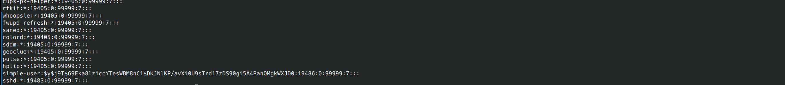
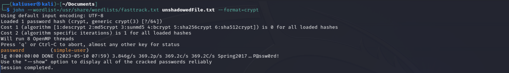

Some of the most fun IT projects are the red team ones. Let’s see if we can crack weak Linux passwords if we can get our hands on the shadow file.
A target Linux computer or virtual machine
A Linux computer or virtual machine to work on
Note: These Linux machines don’t have to be 2 separate computers/virtual machines.
John the Ripper
In the olden days of Linux, the /etc/passwd file contained the user’s passwords. As security evolved, the password in the /etc/passwd file has been replaced with an x and the actual password has moved over to the etc/shadow file. The shadow file is more secure and requires super user privileges to access. The passwords stored in the shadow file aren’t just stored in plain text, they’re hashed. In addition to being hashed multiple times, a process known as key stretching, they get salted. Salting is the process of adding characters to the user’s password before hashing it. The hashing algorithms used include the following:
MD5
Blowfish
SHA-256
SHA-512
yescrypt
We need our password cracking tool John the Ripper, and we need a passwd and shadow file. Start by downloading John The Ripper, I’ll include the terminal command below for Debian based distros. Alternatively you can use Kali Linux, which comes with John The Ripper already installed. I’m going to use an existing Kali Linux virtual machine.
Since we need a passwd and shadow file, let’s make a new user with a password vulnerable to a dictionary attack.
In it’s simplest form, a dictionary attack is when you compare a password you want to crack against a list of potential passwords. The list of passwords is usually comprised of passwords that were found in various breaches. Kali Linux has a list of dictionaries stored in /usr/share/wordlists. For this project I’m going to use “fasttrack.txt”. It’s only got 221 passwords stored in it, but Kali Linux has many more dictionaries, including the famous Rock You dictionary, which has over 14 million passwords.
Let’s make a user so we have a target who’s password we can crack. I’ll name this user “simple-user”.
This will create a user without a home directory. You will be asked to enter a password and some basic information, then asked to confirm if the information is correct. In this case I’m using “password” as the password, as it is contained in the dictionaries we’re going to use later on. So if we were to get our hands on the passwd and shadow files, here’s how we would crack the passwords using a dictionary attack.
To start, we need to use the unshadow command to merge the passwd and shadow files into one useful file that John the Ripper can use. We’ll direct the output into a new file using “>”. Because it’s Linux, a file extension isn’t needed, but you can add one if you like. To unshadow them:
Since the password is stored using yescrypt, we need to add the --format=crypt. We know that we’re using yescrypt by looking at the shadow file. We can see $y$ beside our user name, indicating yescrypt.
If we don’t use --format=crypt, we get a message saying “No password hashes loaded”.
Let’s finally run our dictionary attack. John the Ripper uses the following syntax:
john [dictionary] [unshadowed file] [flags]
Once John the Ripper has finished running, if it was successful you’ll see something similar to the below screenshot. The cracked passwords are stored in .john/pot. The period before john means you’ll need to add the -a flag to see or reference it in the terminal and you’ll need to show hidden files to see it in your chosen file manager.
